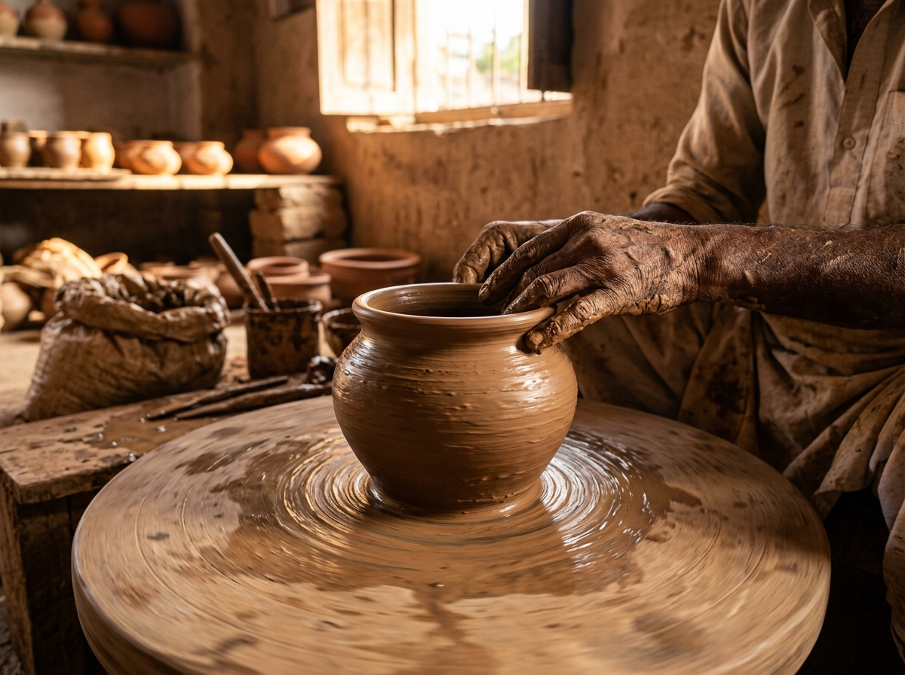

Terracotta · RajasthanOur Artisans
200+ skilled hands from 15 Indian states.
Filter Artisans
Showing all 9 master craftspeople
No artisans match your filters
Try clearing your search terms or picking another craft category or state.